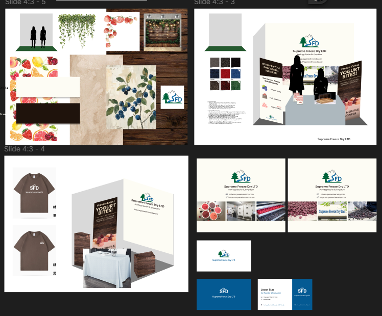

Trade Show Design
Creating a cohesive visual identity for CHFA Vancouver 2025.
Project Overview
This solo-led initiative involved the complete design and execution of our CHFA Vancouver tradeshow presence. From registration and logistics to visual identity and physical setup, I owned every aspect of this project.
Deliverables included booth layout, large-format signage, printed brochures, packaging design, and branded giveaway items — all designed to maintain a consistent, professional look and feel across touchpoints.
Process & Execution
The project began with the development of a visual direction and moodboard tailored to the brand’s identity and target audience for the tradeshow. Leveraging tools such as Figma, Illustrator, and Photoshop, I crafted a cohesive design system that was consistently applied across both digital and physical assets.
In parallel with the design work, I coordinated with print vendors to produce essential materials such as signage, booth drapery, branded apparel, business cards, sample cups, and other promotional and decorative elements. I also managed production timelines to ensure all assets were delivered on schedule. On-site, I led the full setup and takedown of the booth, ensuring an organized, efficient, and visually cohesive presence throughout the event. In addition to logistics, I served as the primary booth host—overseeing the product sampling process, engaging with guests, and actively driving foot traffic to maximize brand visibility and interaction.

Booth mockup, moodboard, and branded collateral showcasing the execution of an unified visual identity.
Challenges & Solutions
With limited internal support and tight turnaround times, I had to be both highly autonomous and resourceful. I created a tracking system for all design, print, and logistical tasks — allowing for efficient management of dependencies.
One key challenge was color accuracy across materials. I coordinated with vendors to get physical proofs and used Pantone-matched swatches to ensure consistency in print.
Impact & Outcome
The final booth was recognized for its polished, nature-inspired design that stood out on the showroom floor. Nearby exhibitors praised the cohesive branding and the strong attention it drew, while the stakeholder expressed surprise at the high level of visitor engagement, as it was their first trade show.
This project demonstrated my ability to independently own a full-cycle design process — from vision to delivery — and strengthened my skills in print production, vendor coordination, and large-scale visual storytelling.